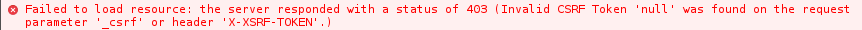

GeoNetwork имеет фильтр безопасности, который предотвращает атаки CSRF. См. дополнительную информацию об этом типе атаки на https://www.owasp.org/index.php/Cross-Site_Request_Forgery_(CSRF) . Все вызовы конечных точек POST, DELETE и PUT без надлежащего токена вернут ошибку.

By default, all AngularJS requests will take care of this token, but all third party APIs and custom user interface calls will have to manually add this token to the request. The token is stored on a cookie called XSRF-TOKEN. This cookie contains a string that has to be added to all requests either by a parameter called «_csrf» or by a header called X-XSRF-TOKEN.
First, do a call to a POST endpoint to get the session and the csrf
$rm-f/tmp/cookie;curl-c/tmp/cookiehttp://localhost:8080/geonetwork/srv/eng/info?type=me-XPOST;cat/tmp/cookie
<html>
<head>
<metahttp-equiv="Content-Type"content="text/html;charset=utf-8"/>
<title>Error403ExpectedCSRFtokennotfound.Hasyoursessionexpired?</title>
</head>
<body><h2>HTTPERROR403</h2>
<p>Problemaccessing/geonetwork/srv/eng/info.Reason:
<pre>ExpectedCSRFtokennotfound.Hasyoursessionexpired?</pre></p><hr><ahref="http://eclipse.org/jetty">PoweredbyJetty://9.3.9.v20160517</a><hr/>
</body>
</html>
# Netscape HTTP Cookie File# https://curl.haxx.se/docs/http-cookies.html# This file was generated by libcurl! Edit at your own risk.
localhostFALSE/geonetworkFALSE0XSRF-TOKEN3825c5f1-49b3-4c62-bc3a-1916d5872d02
Затем, используя cookie и токен, вы можете делать все, что хотите:
The instructions below should only be used to examine the database for trouble-shooting purposes as it is possible to corrupt it using this method. Always take a backup first before making any changes!
If you are using the default embedded H2 database and you need to examine the tables, you can do so using a Graphical UI. Two that have been tested are:
This is called gn.h2.db. The location is dependent on which web server you are using, and where your data directory is. See Configuring the database for more information. Note that on windows you will need to use a path of the form driveletter/path/to/gn.h2.db.